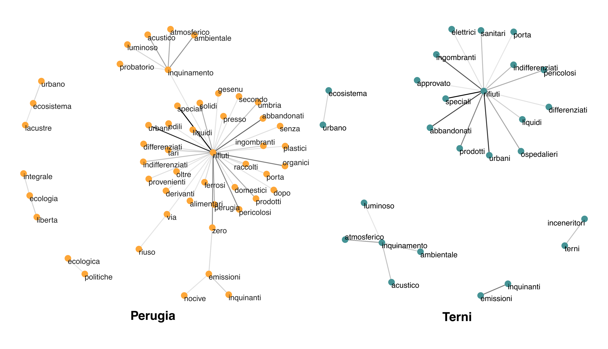

Loading required package: pacmanFinding meaning between words
Word co-occurrences and word embeddings basics
Tutorials
Natural language processing
Relational data
When I had to choose the topic and methods for my Master’s thesis, I decided it would be a great idea to use it as an excuse to start experimenting with natural language processing. Focusing on the Umbria region, where I grew up, I decided to embark on the completely new task of scraping and analysing local press articles and YouTube videos using the tools of computational social science. This is the second of a series of blog posts on the process of doing just that in R, from a beginner’s perspective.
In this article, we will be using the corpus I built for my master’s thesis. You can find it on this website (under the name UmbriaPress), as well as an article about how to build your own (the first of this series of blog posts, in the Natural Language Processing category).
What I assume you already know
You’ll need to already be well versed in R to understand the content of this blog post. If you’re not familiar with R programming, I really recommend the R for Data Science manual. If you want some more step-by-step instructions on how to go about computation al social science stuff, I found Felix Lennert’s tutorials very helpful.
Get to meaning through a machine
The whole point of Natural Language Processing (in the context of social sciences) is to understand and/or analyse very large bodies of text quickly and efficiently. A very important aspect of a text is the relationship between words. We’re not simply interested in counting occurrences of single words or tokens; we’d also like to see which two or three words occur together (co-occur) in our corpus.
In this article, we’ll be looking at a couple distinct ways to do just that, starting with the most basic retrieval approach (KeyWords In Context - KWIC) and then moving on to the more exciting options of graphing co-occurrences.
What am I looking for?
In the case of this specific example, I was interested in investigating public discourse around environmental policy. That’s why most of my queries tend to revolve around the same topic, but you can repeat these same steps with whatever questions you’re interested in!
The basics: keywords in context
The easiest and most accessible way to access a corpus is simply to look for stuff and read it yourself. There are easy-ish ways to do that in R, specifically using the quanteda package (Benoit et al. 2018). Performing this very basic task, however, is even easier to do on (freeware) dedicated software like LancsBox. For the sake of keeping everything R-based, here’s a super simple quanteda demonstration:
First of all, we define our corpus as a quanteda corpus:
UPCorp <- corpus(UmbriaPress,
docid_field = 'doc_id',
text_field = 'text')We then tokenise it, i.e. we divide it in single words:
UPTok <- tokens(UPCorp,
what = 'word',
remove_punct = T,
remove_symbols = T,
remove_numbers = T,
remove_url = T,
remove_separators = T)Finally, we simply call the function kwic:
kwic(UPTok, regex('ambiente'), window = 3)Keyword-in-context with 16 matches.
[15, 45] creando così un | ambiente | a vantaggio del
[37, 507] Perugia Fai Fondo | Ambiente | Italiano Delegazione di
[37, 514] Perugia Fai Fondo | Ambiente | Italiano Giovani Delegazione
[75, 356] Perugia David Grohmann | ambiente | aree verdi rigenerazione
[264, 625] di garantire un | ambiente | sicuro e accogliente
[264, 651] personalmente ritiene un | ambiente | sicuro ed accogliente
[337, 262] Day creando un | ambiente | inclusivo dove la
[436, 183] trasporti turismo cultura | ambiente | e tante altre
[582, 699] riesce Parla di | ambiente | e spiega la
[723, 617] anni David Grohmann | Ambiente | aree verdi rigenerazione
[800, 139] viene creato un | ambiente | in cui i
[800, 216] all’interno di un | ambiente | virtuale Giorni apertura
[800, 391] Benjamin Rabe Un | ambiente | immersivo che si
[829, 628] lo spazio abitativo | Ambiente | e servizi Perugia
[862, 248] a creare un | ambiente | di rispetto e
[963, 117] trovo in un | ambiente | nuovo dove vorrei What it does is basically retrieve all instances of the pattern we specify as a second argument to the kwic function, together with n tokens before and after it. We can specify n through the window argument. This method is probably the simplest of all, but it should by no means be underestimated. Simple retrieval methods, such as this one, can be enough to make even complex linguistic phenomena evident to the educated eye. Like all systems based on simple matching, however, it is vulnerable to all problems caused by polisemy.
Graphing co-occurrences
A slightly more sophisticated way to analyse the meaning between words is to represent token co-occurrences as relational data. For this method, we’ll be using the packages tidytext, ggraph, and tidygraph.
The first step is tokenising the data in bigrams. This means that every token is paired with the one before and the one after it in a single line. I’ll refer you back to Silge and Robinson (2017) for a more detailed introduction to tidy text mining. The example below also includes a bunch of other preprocessing steps, like removing stopwords, but they are specific to this example. The main takeaway is that the very simple function tidytext::unnest_tokens() works like a charm, especially with corpora of English text.
UPngrams <- UmbriaPress |>
mutate(text = str_replace_all(text, "[\'’](?!\\s)", "' "), # adjust tokeniser for Italian
text = str_remove_all(text, regex('\\d'))) |> # deleting numbers
unnest_tokens(token, text, token = 'ngrams', n = 2) |>
separate_wider_delim(cols = token, delim = ' ', names = c('token1', 'token2')) |>
filter(!token1 %in% stopwords_vec, # removing stopwords
!token2 %in% stopwords_vec,
!str_detect(token1, regex('[[:punct:][:digit:]\\p{S}]')), # removing punctuation/artifacts
!str_detect(token2, regex('[[:punct:][:digit:]\\p{S}]')))The second step is to then represent the resulting corpus as a graph. The following example takes advantage of the ggraph and tidygraph packages.
bigram_graph_TR <- UPngrams |>
filter(city == 'TR') |>
filter(str_detect(token1, regex("emissioni|PM10|inquinamento|ecolog|riuso|ecosistem|rifiuti|inceneritor", ignore_case = T)),
!token1 == 'ginecologia') |>
count(token1, token2) |>
filter(n > 10) |>
as_tbl_graph() |>
ggraph(layout = 'fr') +
geom_edge_fan(aes(edge_alpha = n), show.legend = FALSE) +
geom_node_point(size = 3, colour = pal[2]) +
geom_node_text(aes(label = name), vjust = 1, hjust = 0, size = 3) +
labs(tag = 'Terni') +
theme(axis.line.x = element_blank(),
axis.line.y = element_blank(),
panel.grid.major = element_blank())You might have noticed that the corpus is filtered right at the beginning of the pipeline. To tackle my specific research question, I split the corpus in two by city, and then compared the resulting graphs. The final product is the following:

References
Benoit, Kenneth, Kohei Watanabe, Haiyan Wang, Paul Nulty, Adam Obeng, Stefan Müller, and Akitaka Matsuo. 2018. “Quanteda: An r Package for the Quantitative Analysis of Textual Data” 3: 774. https://doi.org/10.21105/joss.00774.
Silge, Julia, and David Robinson. 2017. Welcome to Text Mining with r Text Mining with r. https://www.tidytextmining.com/.